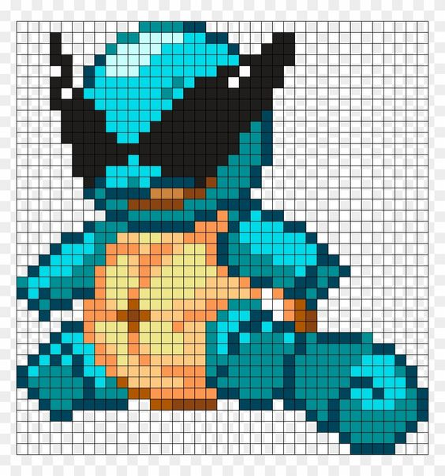

Bulbasaur
Bulbasaur, un Pokémon de tipo Planta/Veneno, es la forma básica de la evolución de la línea de Bulbasaur. Tiene una semilla en su lomo que crece y se fortalece a medida que él mismo lo hace. Es un Pokémon dócil pero valiente, que puede atacar con su energía solar o con su veneno.
Ivysaur
Ivysaur es la evolución de Bulbasaur. A medida que crece, la semilla en su espalda se convierte en una flor más grande. Este Pokémon es más fuerte y resistente que su forma anterior. Ivysaur tiene la capacidad de usar técnicas como Drenadoras para absorber la energía de su oponente.
Venusaur
Venusaur es la forma final de la línea evolutiva de Bulbasaur. Con una imponente flor en su espalda, este Pokémon es conocido por su fuerza y resistencia en combate. Venusaur puede usar el polen de su flor para adormecer a sus oponentes, así como para lanzar poderosos ataques de tipo Planta. Su aspecto majestuoso lo convierte en un Pokémon muy respetado entre los entrenadores.
Charmander
Charmander es un Pokémon de tipo Fuego. Este pequeño lagarto es conocido por la llama que arde en la punta de su cola, la cual indica su estado de salud y emociones. Es un Pokémon valiente y decidido, dispuesto a enfrentar cualquier desafío para alcanzar sus objetivos. A medida que evoluciona, su llama se vuelve más fuerte y su poder aumenta.
Charmeleon
Charmeleon es la evolución de Charmander. Este Pokémon de tipo Fuego es conocido por su temperamento ardiente y su naturaleza desafiante. Su cola, ahora más larga y con una llama más intensa, refleja su crecimiento y madurez. Charmeleon es ágil y poderoso en combate, utilizando sus garras afiladas y su aliento flamígero para enfrentar a sus oponentes con determinación.
Charizard
Charizard es la forma final de la línea evolutiva de Charmander. Este majestuoso Pokémon de tipo Fuego/Volador es conocido por su imponente aspecto y su poderosa cola en llamas. Capaz de volar a grandes alturas y lanzar ataques devastadores, Charizard es un símbolo de fuerza y valentía. Su aliento de fuego puede derretir rocas y su ferocidad en combate lo convierte en un oponente temible para cualquier adversario.

Squirtle
Squirtle es un Pokémon de tipo Agua. Este pequeño Pokémon tortuga es conocido por su caparazón resistente y su cola en forma de hélice. Squirtle es amigable y juguetón, pero también muestra determinación en la batalla. Puede disparar poderosos chorros de agua desde su boca con gran precisión. Es el inicio de una línea evolutiva que eventualmente lleva a uno de los Pokémon más poderosos de tipo Agua: Blastoise.
Wartortle
Wartortle es la evolución de Squirtle. Este Pokémon de tipo Agua muestra un caparazón más grande y una cola más desarrollada. Wartortle es ágil en el agua y puede nadar a velocidades impresionantes. Su cola con forma de espiral le proporciona una mayor estabilidad y control mientras nada. Aunque sigue siendo juguetón, Wartortle también muestra un mayor sentido de la responsabilidad y la determinación a medida que madura.
Blastoise
Blastoise es la forma final de la línea evolutiva de Squirtle. Este imponente Pokémon de tipo Agua es conocido por sus cañones de agua ubicados en su caparazón. Blastoise es extremadamente poderoso en batalla, siendo capaz de disparar potentes chorros de agua a alta presión, los cuales pueden perforar acero con facilidad. Su caparazón es increíblemente resistente y puede protegerlo de ataques enemigos. Blastoise es un símbolo de fortaleza y determinación entre los Pokémon de tipo Agua.